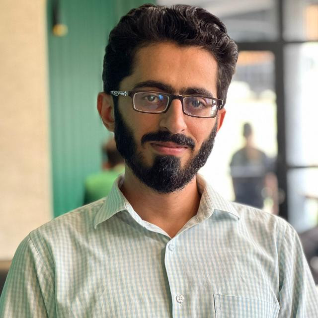
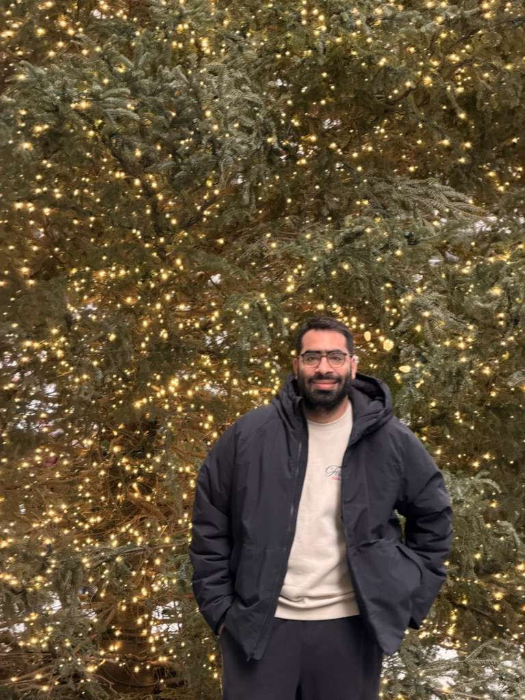
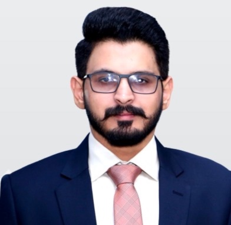
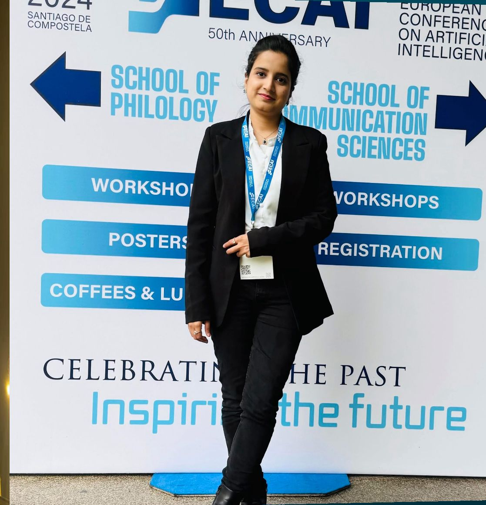
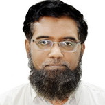

Muhammad Shoaib Tahir
Computational Linguist
Muhammad Shoaib Tahir is a computational linguist with expertise in computational linguistics and language-focused technologies. He is the author of Stats in Corpus Linguistics: A Guide Book (2025) and a contributing author of the book chapter “Natural Language Processing with Corpora” (forthcoming).
His expertise includes corpus system development, Python programming, Firebase, Google Apps Script, and Linux-based systems. He serves as Assistant Manager HR at the Linguistic Association of Pakistan and is a Lecturer at COMSATS University Islamabad, Lahore Campus.

Meesum Alam
Fulbright PhD Scholar
Meesum Alam is a Fulbright PhD scholar in Computational Linguistics at Indiana University Bloomington, working on language documentation and NLP for low-resource and Indigenous languages of Pakistan.
His research includes speech and text datasets, morphological analyzers, Universal Dependencies, and community-driven language technologies to support linguistic equity and digital inclusion.

Husnain Raza
Computational Linguist
Husnain Raza is a data-driven computational linguist working at the intersection of technology, discourse, social science, and political communication.
His expertise includes data mining, annotation, applied machine learning, conversation design, and social media research, focusing on propaganda, disinformation, and conspiracies using corpus and network-based methods.

Mehak
Computational Linguist
Mehak is a linguist specializing in computational linguistics and language modeling. She holds a master’s degree from the University of Siena, Italy, and developed the Sindhi-Reasoning-Instruct dataset.
Her expertise includes corpus creation, data extraction, data annotation, and linguistic analysis for low-resource languages.
Sadia Ashraf
PhD Scholar (Computational Linguistics)
Sadia Ashraf is a former Fulbright Scholar and a PhD student in Computational Linguistics at Indiana University Bloomington, with a minor in Cybersecurity Risk Management.
Her research focuses on harmful speech, AI policy, cybersecurity, and computational approaches for under-resourced Pakistani languages.

Tafseer Ahmed
Computational Linguistics
Tafseer Ahmed is a computational linguist with experience in language technologies, data-driven linguistic analysis, and applied NLP.
His interests include computational approaches to linguistic research, corpus-based analysis, and the development of language resources for real-world applications.